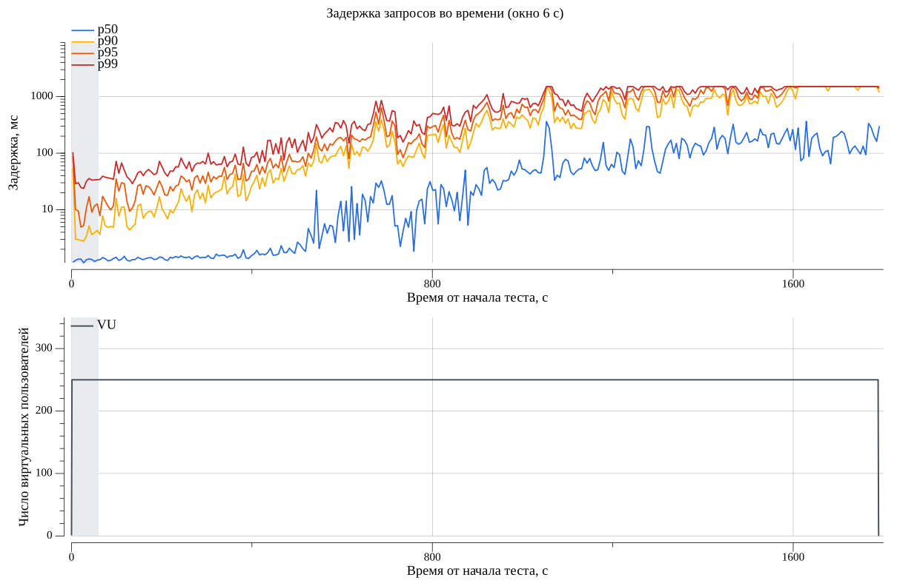
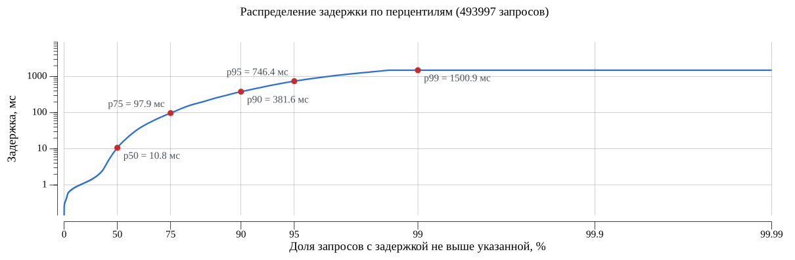
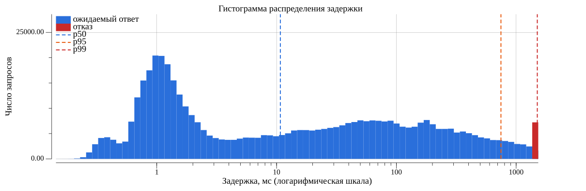
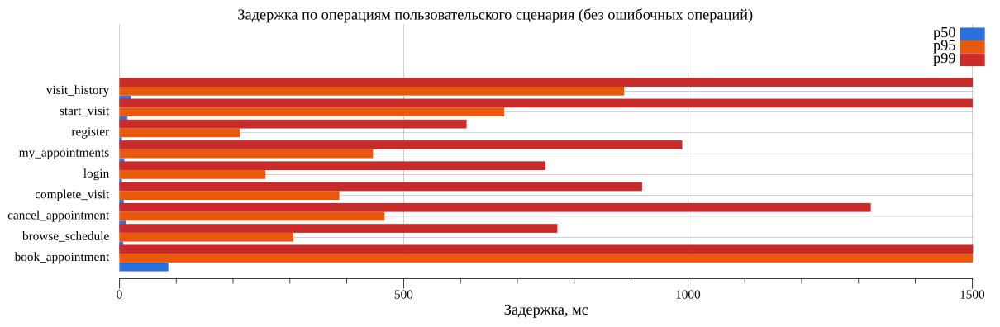
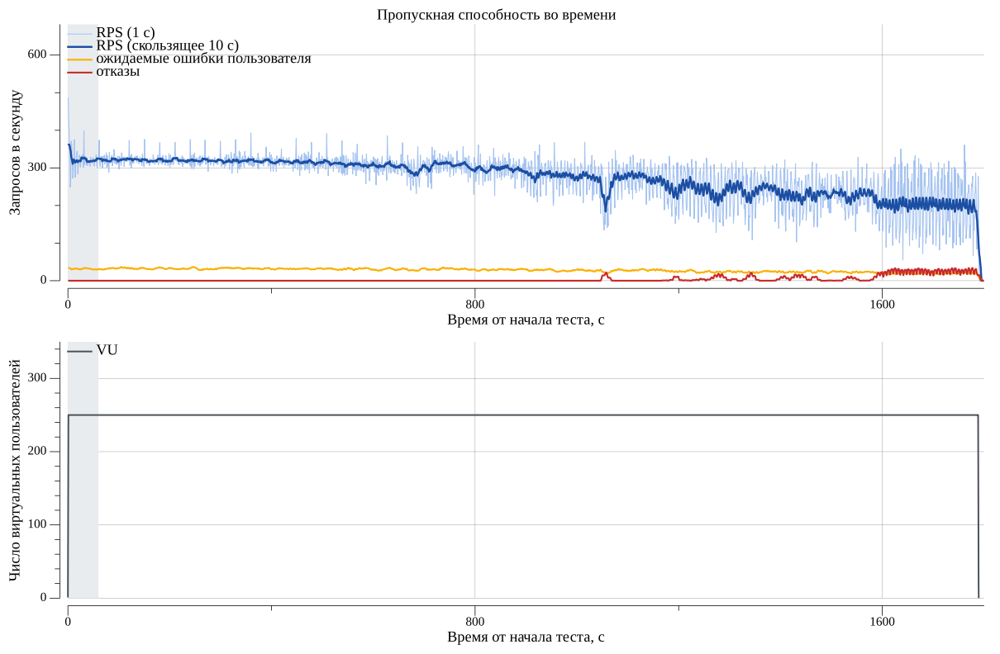
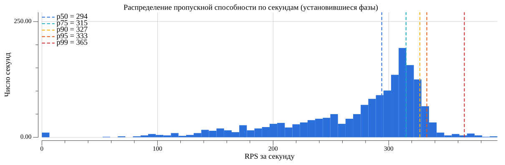
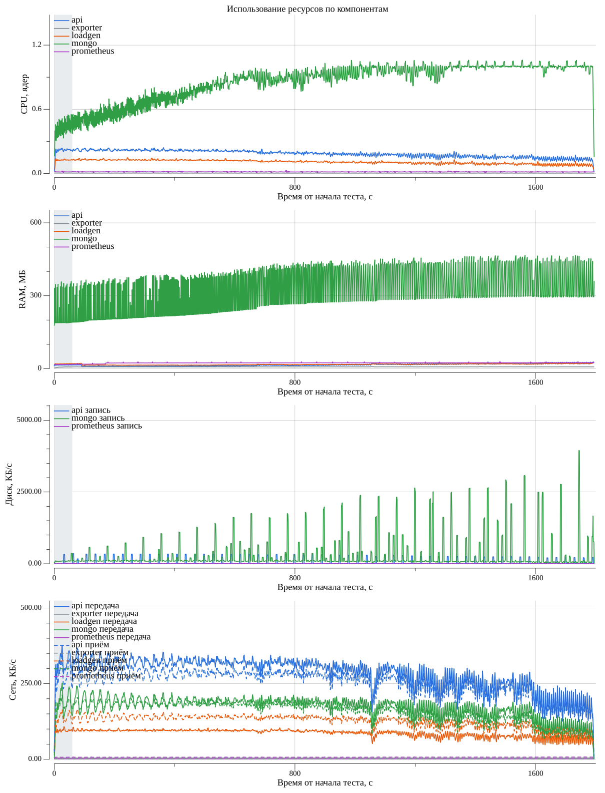

Длительная нагрузка, 10% ошибочных операций
Запросов493997
RPS среднее / медиана274 / 296
p50 / p95 задержки10.8 / 746 мс
p99 задержки1501 мс
Отказы1.46%
Ошибочные операции10.04%
Ошибочных операций: задано 10%, фактически 10.0%. Отказы 1.46%. Дрейф p95 между первым и последним отрезком ×48.2, RPS ×0.65. Тренд памяти: api 31.0 МБ/ч, exporter 0.15 МБ/ч, loadgen 13.4 МБ/ч, mongo 299 МБ/ч, prometheus 5.37 МБ/ч.
Задержка
| Задержка, мс | count | min | mean | p50 | p75 | p90 | p95 | p99 | max |
|---|---|---|---|---|---|---|---|---|---|
| Все запросы | 493997 | 0.14 | 127 | 10.8 | 97.9 | 382 | 746 | 1501 | 1514 |
| Корректные операции | 444399 | 0.44 | 138 | 14.8 | 114 | 420 | 800 | 1501 | 1514 |
| Ошибочные операции | 49598 | 0.14 | 31.9 | 0.65 | 5.79 | 79.2 | 174 | 599 | 1412 |



Операции пользовательского сценария
| Операция | count | min | mean | p50 | p75 | p90 | p95 | p99 | max | Отказы | Ошибочные |
|---|---|---|---|---|---|---|---|---|---|---|---|
| book_appointment | 75188 | 0.20 | 329 | 48.4 | 496 | 1257 | 1501 | 1502 | 1514 | 7.02% | 9.97% |
| browse_schedule | 75209 | 0.16 | 58.3 | 2.81 | 52.9 | 170 | 284 | 737 | 1471 | 0.00% | 10.10% |
| cancel_appointment | 18561 | 0.47 | 98.5 | 10.5 | 97.9 | 288 | 455 | 1237 | 1502 | 0.73% | 9.67% |
| complete_visit | 38876 | 0.46 | 80.8 | 7.09 | 79.9 | 242 | 373 | 895 | 1503 | 0.42% | 10.13% |
| login | 75220 | 0.44 | 55.5 | 4.60 | 51.6 | 157 | 257 | 739 | 1472 | 0.00% | 10.14% |
| my_appointments | 75152 | 0.42 | 85.4 | 8.75 | 75.1 | 237 | 448 | 991 | 1473 | 0.00% | 9.88% |
| register | 16868 | 0.24 | 44.2 | 1.75 | 43.1 | 115 | 197 | 566 | 1332 | 0.00% | 10.20% |
| start_visit | 43804 | 0.46 | 134 | 12.5 | 147 | 421 | 646 | 1501 | 1504 | 1.15% | 10.10% |
| visit_history | 75119 | 0.14 | 155 | 8.62 | 160 | 515 | 838 | 1501 | 1508 | 1.52% | 10.09% |

Пропускная способность
| Показатель | count | min | mean | p50 | p75 | p90 | p95 | p99 | max |
|---|---|---|---|---|---|---|---|---|---|
| RPS за секунду | 1800 | 0.00 | 274 | 296 | 316 | 327 | 334 | 368 | 487 |


Фазы нагрузки
| Участок | VU | RPS ср. | RPS p50 | RPS p5 | p50 мс | p95 мс | p99 мс | Отказы | CPU api | CPU mongo | RAM api, МБ | SLO |
|---|---|---|---|---|---|---|---|---|---|---|---|---|
| прогрев | 250 | 325 | 320 | 275 | 1.27 | 14.3 | 68.6 | 0.00% | 0.21 | 0.42 | 15.2 | да |
| стабильная нагрузка | 250 | 273 | 294 | 150 | 13.2 | 770 | 1501 | 1.52% | 0.18 | 0.87 | 16.0 | нет |
Динамика длительной нагрузки
| Участок | VU | RPS ср. | RPS p50 | RPS p5 | p50 мс | p95 мс | p99 мс | Отказы | CPU api | CPU mongo | RAM api, МБ | SLO |
|---|---|---|---|---|---|---|---|---|---|---|---|---|
| 1/5 | 250 | 320 | 318 | 301 | 1.41 | 31.2 | 61.6 | 0.00% | 0.22 | 0.59 | 10.8 | да |
| 2/5 | 250 | 309 | 310 | 275 | 3.97 | 155 | 343 | 0.00% | 0.21 | 0.84 | 12.1 | да |
| 3/5 | 250 | 284 | 292 | 214 | 28.9 | 488 | 914 | 0.25% | 0.18 | 0.93 | 15.5 | да |
| 4/5 | 250 | 245 | 251 | 157 | 95.0 | 1115 | 1501 | 1.82% | 0.16 | 0.98 | 19.4 | нет |
| 5/5 | 250 | 206 | 214 | 88.3 | 175 | 1501 | 1502 | 7.55% | 0.14 | 0.99 | 22.1 | нет |
| Компонент | Тренд памяти на установившемся участке, МБ/ч |
|---|---|
| api | 31.0 |
| exporter | 0.15 |
| loadgen | 13.4 |
| mongo | 299 |
| prometheus | 5.37 |
Использование ресурсов
| Компонент | Метрика | min | max | mean | median | p95 |
|---|---|---|---|---|---|---|
| api | CPU, ядер | 0.01 | 0.24 | 0.18 | 0.19 | 0.23 |
| api | Троттлинг CPU, с/с | 0.00 | 0.00 | 0.00 | 0.00 | 0.00 |
| api | Чтение с диска, КБ/с | 0.00 | 0.00 | 0.00 | 0.00 | 0.00 |
| api | Запись на диск, КБ/с | 0.00 | 352 | 38.6 | 0.00 | 323 |
| api | RAM (working set), МБ | 9.46 | 27.9 | 15.9 | 15.2 | 23.8 |
| api | Сеть, приём КБ/с | 0.05 | 346 | 255 | 270 | 303 |
| api | Сеть, передача КБ/с | 0.11 | 375 | 283 | 303 | 340 |
| api | Процессы и потоки | 8.00 | 17.0 | 9.59 | 10.0 | 10.0 |
| exporter | CPU, ядер | 0.00 | 0.01 | 0.00 | 0.00 | 0.00 |
| exporter | Троттлинг CPU, с/с | 0.00 | 0.00 | 0.00 | 0.00 | 0.00 |
| exporter | Чтение с диска, КБ/с | 0.00 | 0.00 | 0.00 | 0.00 | 0.00 |
| exporter | Запись на диск, КБ/с | 0.00 | 0.00 | 0.00 | 0.00 | 0.00 |
| exporter | RAM (working set), МБ | 2.69 | 8.13 | 7.39 | 7.44 | 7.60 |
| exporter | Сеть, приём КБ/с | 0.43 | 0.58 | 0.48 | 0.48 | 0.50 |
| exporter | Сеть, передача КБ/с | 2.34 | 4.21 | 4.03 | 4.01 | 4.19 |
| exporter | Процессы и потоки | 4.00 | 6.00 | 5.05 | 5.00 | 6.00 |
| loadgen | CPU, ядер | 0.04 | 0.15 | 0.11 | 0.11 | 0.13 |
| loadgen | Троттлинг CPU, с/с | 0.00 | 0.00 | 0.00 | 0.00 | 0.00 |
| loadgen | Чтение с диска, КБ/с | 0.00 | 0.00 | 0.00 | 0.00 | 0.00 |
| loadgen | Запись на диск, КБ/с | 0.00 | 0.00 | 0.00 | 0.00 | 0.00 |
| loadgen | RAM (working set), МБ | 13.4 | 22.3 | 17.5 | 17.7 | 21.2 |
| loadgen | Сеть, приём КБ/с | 42.8 | 166 | 126 | 132 | 148 |
| loadgen | Сеть, передача КБ/с | 26.6 | 108 | 86.1 | 91.3 | 98.4 |
| loadgen | Процессы и потоки | 7.00 | 9.00 | 8.24 | 8.00 | 9.00 |
| mongo | CPU, ядер | 0.15 | 1.06 | 0.85 | 0.91 | 1.02 |
| mongo | Троттлинг CPU, с/с | 0.01 | 1.08 | 0.62 | 0.64 | 1.01 |
| mongo | Чтение с диска, КБ/с | 0.00 | 0.00 | 0.00 | 0.00 | 0.00 |
| mongo | Запись на диск, КБ/с | 1.05 | 3949 | 286 | 90.0 | 1615 |
| mongo | RAM (working set), МБ | 181 | 466 | 324 | 298 | 446 |
| mongo | Сеть, приём КБ/с | 0.11 | 213 | 158 | 171 | 192 |
| mongo | Сеть, передача КБ/с | 0.05 | 252 | 172 | 181 | 211 |
| mongo | Процессы и потоки | 59.0 | 156 | 113 | 123 | 148 |
| prometheus | CPU, ядер | 0.01 | 0.03 | 0.01 | 0.01 | 0.02 |
| prometheus | Троттлинг CPU, с/с | 0.00 | 0.00 | 0.00 | 0.00 | 0.00 |
| prometheus | Чтение с диска, КБ/с | 0.00 | 0.00 | 0.00 | 0.00 | 0.00 |
| prometheus | Запись на диск, КБ/с | 0.00 | 9.00 | 0.94 | 0.00 | 7.00 |
| prometheus | RAM (working set), МБ | 16.6 | 28.7 | 23.4 | 23.9 | 24.5 |
| prometheus | Сеть, приём КБ/с | 2.77 | 7.51 | 6.92 | 6.87 | 7.28 |
| prometheus | Сеть, передача КБ/с | 0.47 | 1.19 | 0.97 | 0.96 | 1.01 |
| prometheus | Процессы и потоки | 8.00 | 15.0 | 8.06 | 8.00 | 8.00 |

Коды ответов
| Код | Запросов |
|---|---|
| 200 | 320742 |
| 201 | 116439 |
| 400 | 16890 |
| 404 | 25209 |
| 409 | 7499 |
| 500 | 7218 |
Окружение прогона
| Компонент | Логические CPU | Квота CPU | Резерв RAM, МБ | Лимит RAM, МБ | Образ | ID образа |
|---|---|---|---|---|---|---|
| api | 0,1 | 1 | — | 512 | vitaline-lab4-api:20261112-210010-soak-err10-k4jh | 6a4010bb2944 |
| exporter | 6,7 | — | — | 64 | vitaline-lab4-exporter:1 | b58c2ecc0ca2 |
| loadgen | 4,5 | — | — | 2048 | vitaline-lab4-loadgen:1 | 0b0105a43a6d |
| mongo | 2,3 | 1 | — | 1024 | mongo:7 | 9896df581dfd |
| prometheus | 6,7 | — | — | 768 | prom/prometheus:v3.5.0 | 63805ebb8d2b |